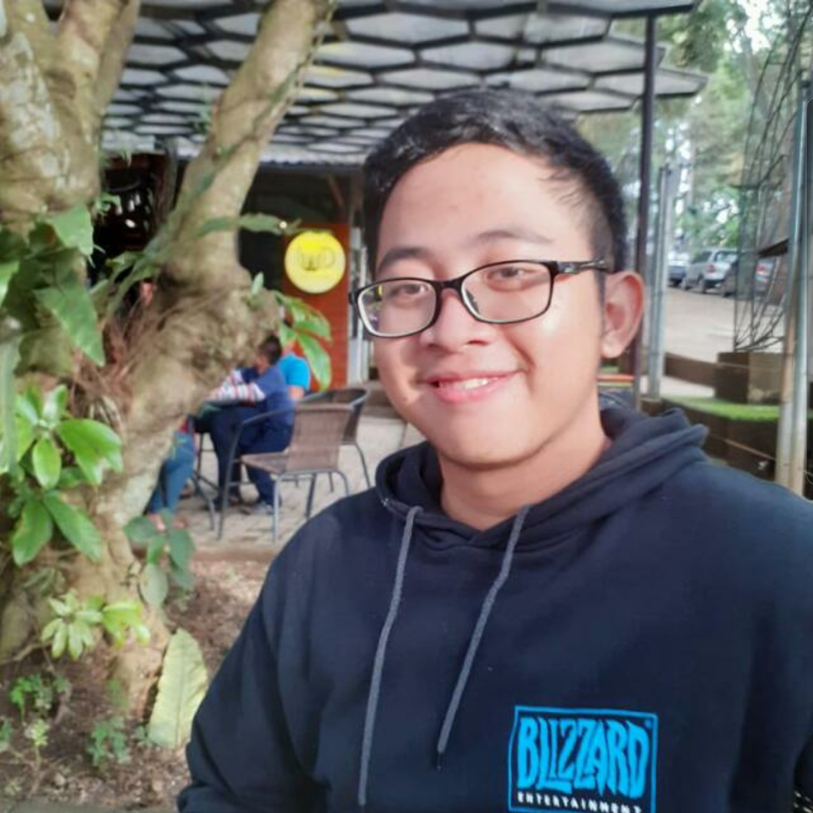

Ahmad Firdaus Hirana
Software Engineering Enthusiast | Undergraduate Information Systems Student

Summary
Experienced full-stack developer proficient in Python, and MySQL,
with a strong problem-solving mindset. A successful leader of
two capstone projects, passionate about innovative solutions.
Skilled in both front-end and back-end development, and adept
at leading project teams for effective collaboration.
Education
- Associate's degree in Information Systems from Universitas Bina Sarana Informatika
(September 2021 - September 2024).
- Bachelor's degree in Information Systems from Universitas Bina Sarana Informatika
(September 2024 - September 2025).
Experience
- Revou Academy • DA & SWE
-
Achieved an impressive score of 93 out of 100 on the Doctor
Appointment app Capstone Project,
demonstrating a strong
commitment to upholding excellence and delivering top-notch results.
-
Bangkit Academy • Cloud Computing Cohort
-
Earned a remarkable score of 84 out of 100 for the Carbon
Tracker app Capstone Project,
underscoring a dedication to
excellence and the delivery of high-quality outcomes.
Skills
- Leadership: ★★★★☆
- collaboration: ★★★★☆
- Problem Solving: ★★★★☆
Certifications
-
Belajar Dasar Pemrograman
Web - Dicoding Indonesia
Issued Feb 2023 · Expires Feb 2026
-
Belajar Membuat Aplikasi
Back-End untuk Pemula
dengan Google Cloud -
Dicoding Indonesia
Issued Mar 2023 · Expires Mar 2026
Contact Me! Let's Connect Over Coffee